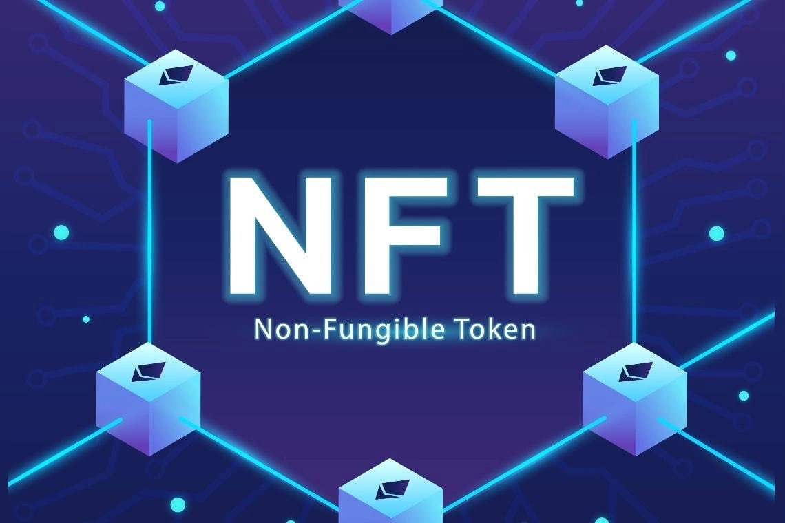

NFT и цифровые активы
NFT и цифровые активыNFT (неделимые токены) представляют собой уникальные цифровые активы, которые фиксируются на блокчейне. Они позволяют удостоверять право собственности на цифровые объекты, такие как изображения, видео, музыка и другие формы контента, создавая новые возможности для авторов и коллекционеров. Что такое NFT и как они работаютNFT — это токены, которые представляют собой уникальные цифровые активы, не подлежащие делению, в отличие от традиционных криптовалют, таких как Bitcoin или Ethereum. Каждый NFT хранит метаданные, которые подтверждают его уникальность и принадлежность. Это позволяет легко отслеживать права собственности и происхождение актива. Применение в искусстве, играх и коллекционированииNFT активно используются в различных сферах, включая:
Примеры успешных продаж NFTРынок NFT стал свидетелем множества успешных продаж, включая:
Критика и проблемы рынка NFTНесмотря на растущую популярность, рынок NFT сталкивается с критикой и проблемами, включая:
Будущее цифровых активов и их регулированиеБудущее NFT и цифровых активов связано с необходимостью их регулирования. Ожидается, что правительства и организации будут разрабатывать новые правила и законы, направленные на защиту пользователей и упрощение процесса покупки и продажи. Это может включать установление стандартов для аутентификации и передачи прав на цифровые активы. |
 |